{kind=link}
{kind=link}
import pymupdf
doc = pymupdf.open('Consultation_des_planches_au_1_sur_2000.pdf')
for page in doc:
for link in page.get_links():
url = link['uri']
# Do something with urlTD PLU Bioclimatique
Dans ce TD, nous allons mettre en pratique quelques compétences acquises dans les séances précédentes et en acquérir de nouvelles sur un cas d’étude : le PLU Bioclimatique parisien.
Pour mémoire, la Ville de Paris a adopté en novembre 2024 son nouveau plan local d’urbanisme. La mise en révision avait été engagée en décembre 2020. Après une phase de concertation, le Conseil de Paris avait arrêté en juin 2023 un projet de PLU, qui a fait l’objet d’une enquête publique au tout début de 2024.
À cette époque, le dossier d’enquête publique consistait en une multitude de gros fichiers PDF : pas de géoportail, pas de couches SIG… Si l’on voulait exploiter les données, il fallait se débrouiller.
Nous allons voir comment !
Les planches graphiques au 1/2000e
Dans le PLU, l’une des pièces-clés est l’atlas des planches au 1/2000e. Ces cartes regroupent les règles d’urbanisme applicables sur le territoire parisien. Elles représentent une traduction graphique du règlement écrit.
L’atlas est aujourd’hui accessible en ligne sur le site des Règles d’urbanisme de Paris.
Une planche
Notre objectif va être d’afficher une des planches dans QGIS. On pourra ainsi superposer d’autres couches pour nos analyses. Pour cela, on va télécharger l’image de la carte, la traiter et la géoréférencer.
Téléchargement
J’ai choisi la planche D-05, qui représente une partie du 8e arrondissement.
- Sur le site des Règles d’urbanisme de Paris, dans l’onglet Documentations, trouver le plan de repérage de l’atlas.
- Cliquer sur le rectangle D-05.
- Dans la pop-up qui surgit, cliquer sur Vue pour télécharger la planche au format PDF.
Traitement
Nous avons un fichier PDF. Il nous faut le convertir au format image, puis éliminer le cartouche afin de ne conserver que la carte. On peut par exemple utiliser GIMP, ou Photoshop.
Pour aller plus vite, l’image déjà traitée est téléchargeable ici.
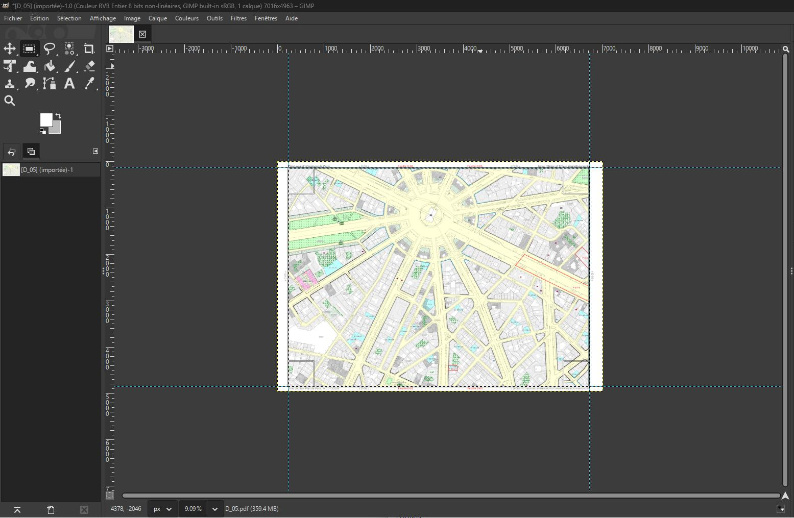
Géoréférencement
Géoréférencer une image, c’est associer à chacun des pixels qui la composent une coordonnée géographique. Pour cela, il suffit de donner à QGIS les coordonnées de quelques points de contrôle (aussi appelés points d’appuis). Il se charge d’interpoler tous les autres.
Couche de référence
La qualité du géoréférencement dépend donc en grande partie du choix des points de contrôle. Pour être le plus précis possible, on va charger dans QGIS l’une des couches utilisée par l’Atelier parisien d’urbanisme (APUR) pour établir les cartes du PLU : la couche de l’emprise bâtie de Paris.
Ce sera l’occasion d’apprendre comment utiliser des géoservices, c’est-à-dire des flux de données sans téléchargement préalable, puisque l’APUR utilise ArcGIS Server.
- Créer un projet vide dans QGIS
- Sélectionner le SCR 2154 (RGF93v1 / Lambert-93)
- Couche > Ajouter une couche de serveur ArcGIS REST
- URL du serveur : https://carto2.apur.org/apur/rest/services/OPENDATA/
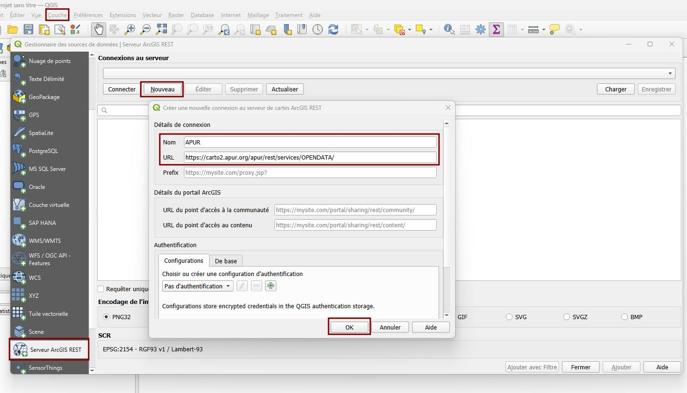
Dans la liste des couches qui s’affiche, trouver EMPRISE_BATIE_PARIS et ajouter le 2e Période de construction. C’est un flux image et non un flux vectoriel, cela se chargera plus rapidement.
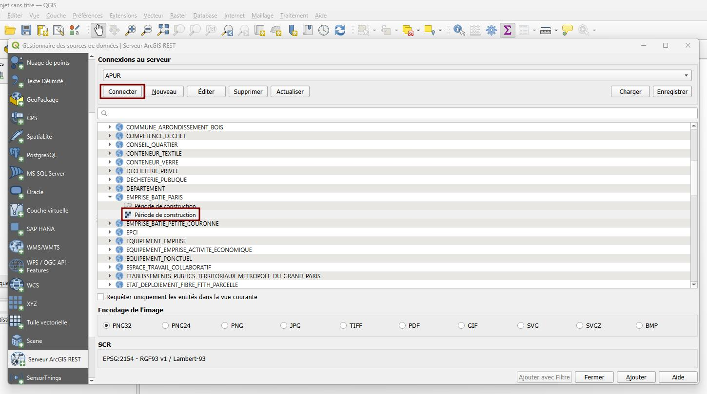
Géocodage
Ouvrir l’outil de géoréférencement :
- Couche > Géoréférencer
Puis, dans la nouvelle fenêtre qui s’ouvre :
- Fichier > Ouvrir un raster
- Choisir le fichier
D_05.jpg
On définit ensuite les paramètres de la transformation.
On conservera les paramètres proposés par défaut :
- Type de transformation : Linéaire
- Mode de ré-échantillonnage : Plus proche voisin
Mais on cochera la case Créer seulement un fichier World.
Traduction : le fichier que l’on a est très propre, l’image n’a pas été déformée, la projection source est très certainement la même que la projection cible = on a seulement besoin de réduire/agrandir, tourner, translater l’image et non de la tordre pour l’ajuster.
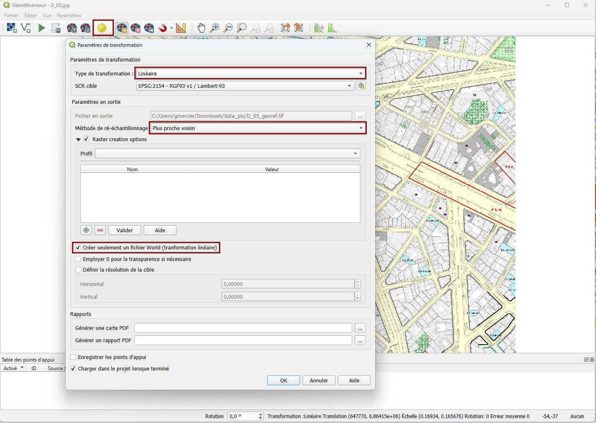
Puis, avec l’outil prévu à cet effet, sélectionner des points de contrôle, en cliquant successivement sur un point de l’image puis le même point sur la carte. On peut ici se contenter de trois points non alignés et distants les uns des autres. À partir de 3 points, QGIS calcule les erreurs de géoréférencement : en règle générale, il est bon d’avoir des écarts inférieurs à 10 pixels.
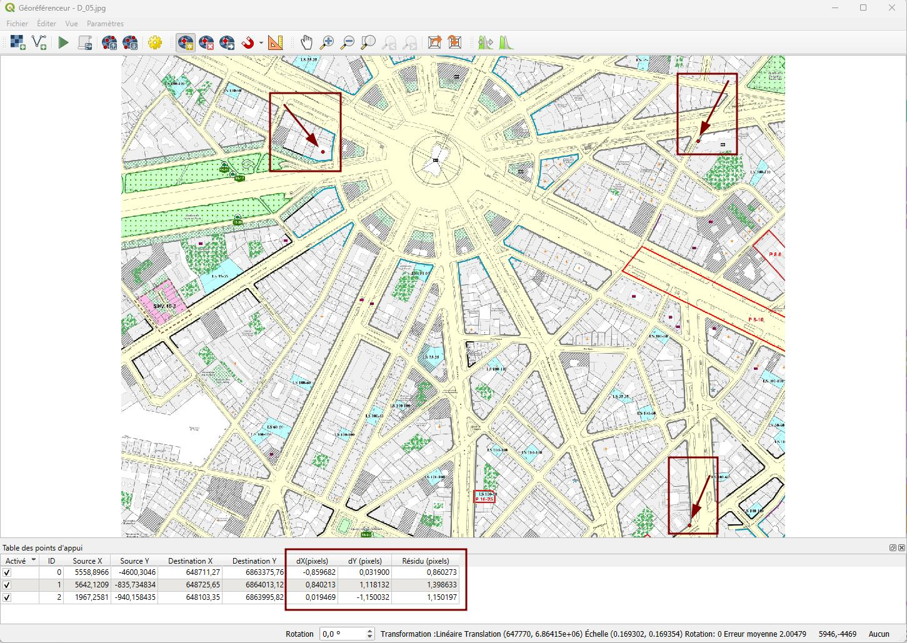
Les points de contrôles utilisés dans l’image ci-dessous sont téléchargeables ici. On peut les charger si on le souhaite.
Appliquer ensuite la transformation. La carte s’affiche à son emplacement à Paris, on peut vérifier la qualité du géoréférencement en affichant notre couche de référence et en appliquant une légère transparence à l’image recalée.
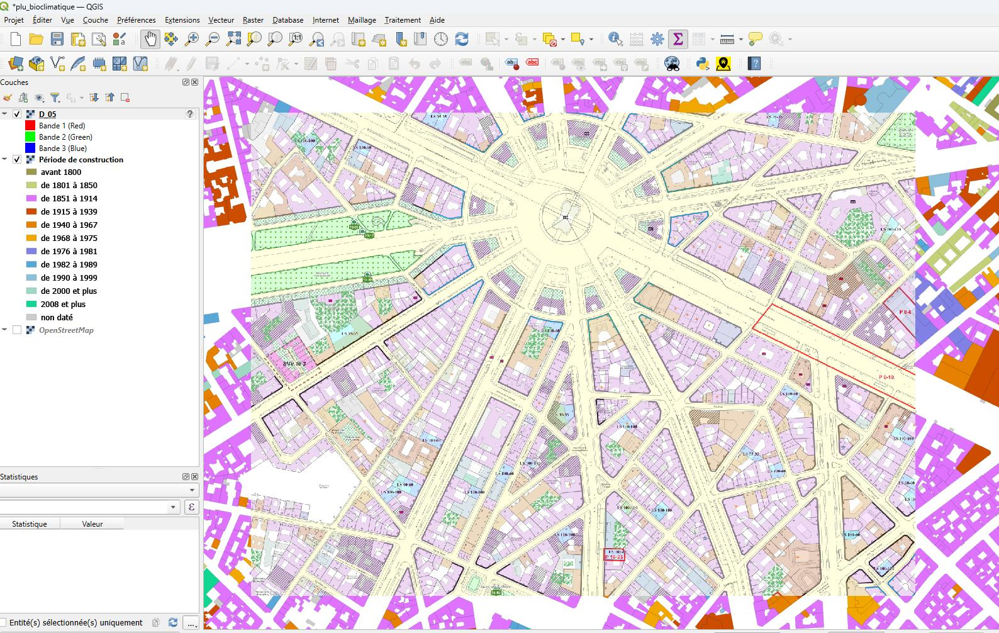
Fichier World
Par curiosité, et parce que cela nous sera utile plus tard, allons voir dans le dossier contenant l’image D_05.jpg. On remarque qu’un nouveau fichier a été créé : D_05.wld. C’est en lisant ce fichier que QGIS est capable de transformer la coordonnée d’un pixel de l’image (ex : 234, 545) en une coordonnée géographique (ex: 647 770, 6 864 143).
On peut ouvrir ce fichier avec un éditeur de texte.
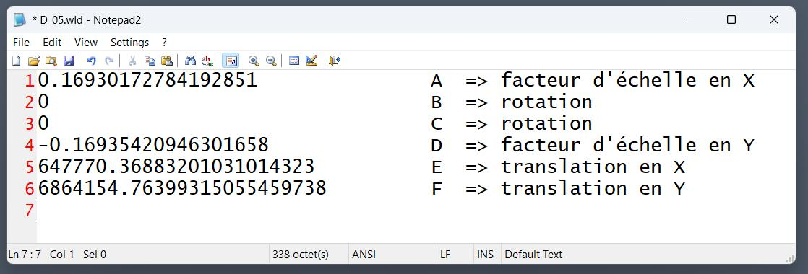
On retiendra :
- que les valeurs A et D sont des facteurs d’échelle, c’est-à-dire qu’ils donnent la taille d’un pixel dans les unités du SCR utilisé. Dans notre cas, 1 pixel sur l’image = 0,169 m dans la réalité.
- que les valeurs B et C sont des termes de rotation. Dans notre cas, l’image n’a pas besoin d’être pivotée, elle est bien au nord, les termes sont donc nuls.
- que les valeurs E et F sont des termes de translation, c’est-à-dire qu’ils donnent la coordonnée géographique du point supérieur gauche de la carte. On peut le vérifier sur l’image ci-dessous.
Pour les gory details, se référer à cette page.
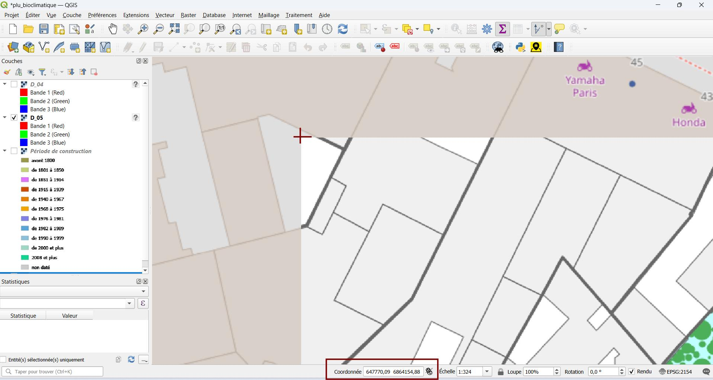
Plein de planches
Nous avons traité une seule planche. Comment pourrait-on procéder si l’on voulait géoréférencer toutes les planches du PLU ? Il y a heureusement des solutions pour automatiser ce qu’on vient de faire manuellement, on va les esquisser ci-dessous.
Téléchargement
On voit sur le site du PLU qu’un fichier avec la liste des planches est disponible.
C’est un fichier PDF qui contient les liens vers chacune des 134 planches. Problème : il ne sont pas apparent… On doit donc les extraire.
- Solution sans code : extraction avec un utilitaire en ligne comme Supertool.
- Solution avec code : extraction avec un mini script qui utilise la libraire
PyMuPDF.
Voici un fichier texte avec la liste des liens extraits. Mais on voit qu’ils sont cassés : le prestataire IT de la Ville de Paris (dont le nom figure dans les métadonnées du PDF) a oublié de substituer au nom du serveur de test celui utilisé en production !
On peut s’en charger grâce à la commande Find/Replace d’un éditeur de texte, ou à un coup de ligne de commande.
cat liste_urls.txt | sed -e 's/k04-siteplubioclimatique.form.apps.paris.md/regles-urbanisme.paris.fr/'
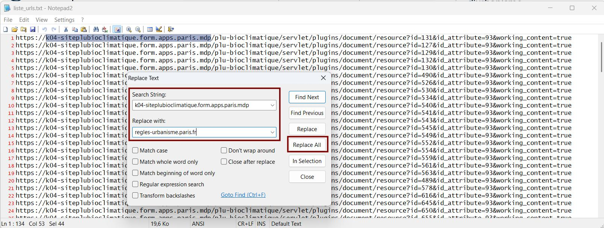
Ceci fait, il est possible de télécharger tous les fichiers avec une boucle en ligne de commande.
while read url; do wget --content-disposition $url; done < liste_urls.txt
Traitement
Toutes les planches PDF sont bâties sur le même modèle, il est donc aisé d’automatiser la conversion en JPG et le rognage du cartouche.
Photoshop sait très bien le faire, GIMP également, mais avec un plugin. Le plus rapide serait d’utiliser ImageMagick en ligne de commande.
# Pour les curieux, la commande pour convertir et recadrer
# le fichier PDF qu'on a utilisé plus haut
convert -density D_05.pdf D_05.jpg
convert D_05.jpg -crop 6492x4723+232+136 +repage crop/D_05.jpg
Géoréférencement
Pour géoréférencer les images obtenues, il faudrait simplement créer les fichiers World correspondant à chaque planche.
Pour cela, on remarque que les planches sont espacées très régulièrement : en fait, chaque planche est décalée de 750m en latitude et de 1000m en longitude. Pour générer les fichiers World, on pourrait donc partir des coordonnées de D_05 et recalculer les termes de translation (paramètres E et F) des autres planches, en laissant le facteur d’échelle et les termes de rotation inchangés.
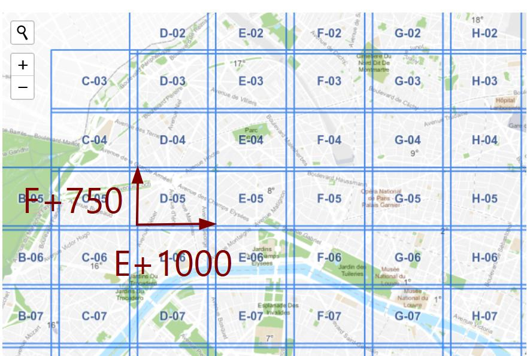
Faisons le test sur un exemple :
- Télécharger le fichier
E_05.jpg. - Copier le fichier
D_05.wlden un fichierE_05.wld - Ouvrir le fichier
E_05.wldet ajouter 1000 au nombre de la 5e ligne - Ajouter la couche
E_05.jpgdans QGIS : Couches > Ajouter une couche Raster
{kind=link}
Miracle : la couche est parfaitement ajustée !
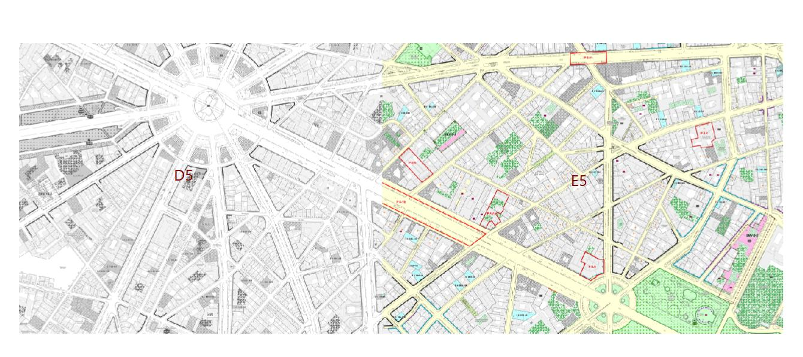